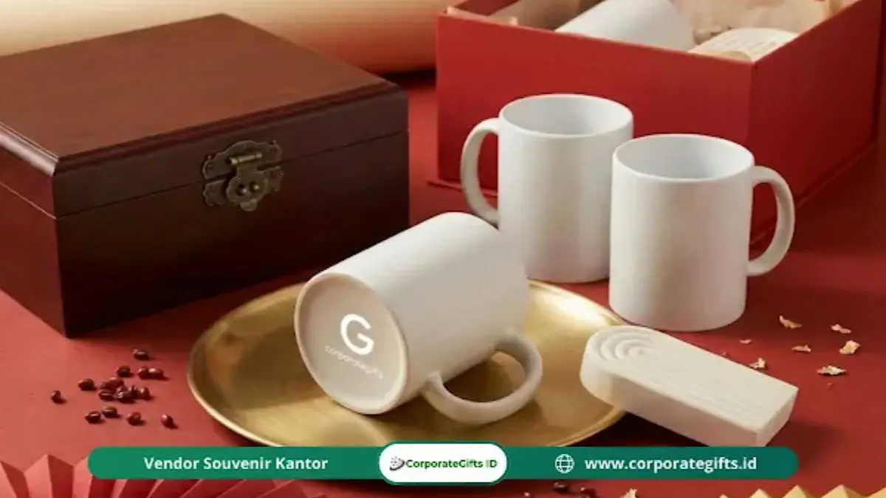

Corporate Gifts ID - Makna souvenir Imlek adalah simbol doa tulus, penghormatan mendalam, serta perekat hubungan sosial dan bisnis (Guanxi) yang dihantarkan untuk mengharapkan keberuntungan (Fuk), kemakmuran finansial (Luk), dan kesehatan berumur panjang (Sau) bagi pihak penerima. Lebih dari sekadar pemberian barang fisik, kurasi souvenir Imlek dan hampers perusahaan menjadi jembatan diplomasi emosional untuk menyampaikan rasa terima kasih kepada keluarga besar, rekan bisnis strategis, maupun jajaran pimpinan kerja.
Pernahkah Anda merenung sejenak di tengah padatnya agenda kuartal pertama mengenai siapa saja pihak yang telah berjasa besar dalam perjalanan karier dan kemajuan bisnis Anda? Kesibukan operasional sering kali membuat komunikasi personal merenggang. Momen Tahun Baru Imlek hadir sebagai "pintu gerbang" emas yang sangat berharga untuk memperbarui ikatan kemitraan dan menyalakan kembali kehangatan relasi profesional.
Menyiapkan bingkisan berkualitas memang membutuhkan waktu dan perencanaan di tengah jadwal yang ketat. Namun, ketika Anda memahami kedalaman filosofi budayanya, langkah ini bertransformasi menjadi investasi hubungan yang tak ternilai, karena Anda tengah menyampaikan bahasa apresiasi universal yang melampaui sekadar transaksi komersial.
Poin Kunci Makna Pemberian Souvenir Imlek:
- Investasi Hubungan (Guanxi): Bukan sekadar hadiah transaksional, melainkan fondasi kepercayaan jangka panjang dalam ekosistem bisnis dan keluarga.
- Penyampai Tiga Berkah Luhur: Mengalirkan doa kebaikan seputar rezeki melimpah, kesehatan jasmani, dan keharmonisan keluarga sepanjang tahun.
- Memahami Tabu Budaya: Sangat penting mematuhi etika memberikan hadiah Imlek agar tidak keliru memilih item terlarang seperti jam dinding atau benda tajam.
- Sentuhan Personalisasi Elegan: Menggabungkan ornamen klasik merah-emas dengan produk modern fungsional menciptakan kesan prestisius yang relevan.
Filosofi di Balik Tradisi Memberi Souvenir Imlek
Dalam kebudayaan Tionghoa, tradisi memberi hadiah berakar pada konsep menjaga keselarasan kosmis dan keharmonisan sosial. Hadiah bukanlah upeti wajib, melainkan wujud nyata dari niat baik (intent) untuk merawat jaringan relasi (Guanxi). Nilai filosofis ini tercermin dalam empat pilar utama:
- Wujud Penghormatan Luhur (Respect): Menyerahkan bingkisan kepada orang tua, mentor, atau dewan direksi klien adalah manifestasi rasa bakti atas bimbingan dan kesempatan yang telah diberikan.
- Pengikat Tali Silaturahmi: Di tengah dinamika dunia korporat yang bergerak cepat, cenderamata berfungsi sebagai perekat yang mencairkan kembali jarak emosional akibat jarangnya pertemuan tatap muka.
- Hukum Timbal Balik Positif: Memberi dengan ketulusan hati diyakini mengundang resonansi energi kebaikan yang akan berbalik kepada pihak pemberi dalam bentuk kelancaran rezeki dan peluang kemitraan baru.
- Simbol Rekonsiliasi Damai: Suasana pergantian tahun sering dimanfaatkan sebagai sarana elegan untuk meluruskan kesalahpahaman masa lalu dan membangun lembaran kerja sama baru yang lebih bersih.
Tiga Pilar Doa dalam Setiap Bingkisan: Fuk, Luk, dan Sau
Setiap item yang dimasukkan ke dalam paket hampers dan parcel Imlek membawa pesan simbolik yang terhubung langsung dengan trinitas berkah tradisional Tionghoa:
- Fuk (Keberuntungan dan Berkah): Dilambangkan melalui elemen manis dan jeruk mandarin, mencerminkan harapan agar kehidupan penerima dipenuhi nasib baik serta dijauhkan dari marabahaya.
- Luk (Kemakmuran dan Kejayaan Karier): Diwujudkan melalui bingkisan berkualitas tinggi yang mencerminkan doa kemajuan bisnis yang berlimpah setiap tahun (Nian Nian You Yu).
- Sau (Kesehatan dan Umur Panjang): Disimbolkan lewat teh herbal premium, sarang burung walet, suplemen alami, atau perangkat minum higienis seperti tumbler stainless steel bermutu tinggi.
Mengapa Warna Merah dan Emas Sangat Dominan?
Dominasi palet warna merah menyala dan aksen emas berkilau pada kotak cenderamata Imlek bukanlah sekadar preferensi estetika visual, melainkan memiliki akar sejarah dan makna spiritual yang mendalam:
- Penangkal Energi Negatif: Menurut legenda klasik Tiongkok, warna merah yang melambangkan api sangat ditakuti oleh makhluk mitologi perusak bernama "Nian", sehingga warna ini difungsikan sebagai benteng proteksi penolak bala.
- Simbolisasi Energi Yang (Kehidupan): Merah merepresentasikan kehangatan darah dan vitalitas hidup yang memancarkan optimisme segar menyongsong babak baru di awal musim semi.
- Kemuliaan dan Kejayaan Emas: Warna kuning keemasan merupakan warna sakral kekaisaran yang melambangkan status ningrat, kemuliaan budi pekerti, serta tumpukan kekayaan material.
- Harmonisasi Rezeki: Paduan harmonis merah dan emas dipercaya sebagai katalis visual paling efektif untuk memicu datangnya hoki berlipat ganda bagi siapa pun yang memandangnya.

Aksen pita sutra emas dan kemasan bertekstur beludru merah mempertegas rasa hormat dalam hubungan profesional korporat.
Etika dan Tata Cara Memberikan Hadiah Imlek yang Tepat
Dalam tradisi ketimuran, tata krama menyerahkan bingkisan dipandang sama pentingnya dengan isi bingkisan itu sendiri. Sikap tubuh dan pemahaman norma mencerminkan kehalusan budi pekerti pihak pemberi:
- Menghindari Pantangan Budaya: Hindari memberikan benda bermata tajam seperti gunting (melambangkan pemutusan hubungan), jam dinding (pelafalannya menyerupai kata menghadiri pemakaman), atau payung (menyerupai kata perpisahan). Jika ingin memberikan souvenir fungsional harian, Anda dapat mengarahkan pilihan pada souvenir kantor netral seperti buku agenda atau set teh.
- Menyerahkan Menggunakan Kedua Tangan: Selalu serahkan kotak bingkisan dengan menopangnya menggunakan kedua belah tangan seraya sedikit menundukkan kepala sebagai tanda takzim tulus.
- Menggunakan Numerologi Genap: Susun isi cenderamata dalam hitungan genap (seperti 6 atau 8 yang melambangkan kelancaran dan kekayaan tak terputus), serta hindari total barang berjumlah 4 yang identik dengan kesialan.
- Etiket Membuka Bingkisan: Hindari membuka kemasan hadiah langsung di hadapan pemberi kecuali dipersilakan, demi menjaga kenyamanan emosional kedua belah pihak.
Tabel Matriks Simbol dan Makna Item Cenderamata Imlek
Berikut rangkuman komparatif makna filosofis dari berbagai elemen pengisi cenderamata Tahun Baru Imlek:
| Komponen Hadiah | Makna Filosofis Simbolik | Target Penerima Ideal | Sentuhan Kemasan Rekomendasi |
|---|---|---|---|
| Jeruk Mandarin (Kam) | Emas batangan, rezeki melimpah, dan kemakmuran | Seluruh relasi bisnis & keluarga besar | Kotak kayu berongga atau keranjang anyam merah |
| Kue Keranjang (Nian Gao) | Kenaikan derajat karier dan rezeki dari tahun ke tahun | Karyawan internal & rekanan komersial | Bungkus mika kedap udara berstempel emas |
| Set Teh Premium Oolong / Pu-erh | Ketenangan pikiran, umur panjang, dan kebijaksanaan | Eksekutif senior, mitra VVIP, komisaris | Kaleng kedap udara dalam hardbox berpita merah |
| Manisan & Kue Kering Artisan | Kehidupan rumah tangga yang manis dan harmonis | Klien korporat & tim kerja kolaboratif | Toples kaca bening dengan label kustom nama instansi |
| Tumbler & Set Cangkir Keramik | Kebersamaan berkelanjutan dan kepedulian kesehatan | Karyawan generasi muda & mitra kerja aktif | Hardbox kaku berbusa presisi grafir laser |
Transformasi Makna Souvenir Imlek di Era Modern
Seiring berjalannya waktu, cara perusahaan menghantarkan cenderamata Imlek mengalami pergeseran positif tanpa mengorbankan nilai esensialnya:
- Kepedulian Lingkungan Berkelanjutan: Penggunaan kemasan ramah lingkungan seperti besek bambu alami, kain furoshiki daur ulang, atau tas belanja kanvas menggantikan kemasan plastik sekali pakai, memperluas makna "peduli" hingga ke kelestarian bumi.
- Kustomisasi Desain Korporat: Penambahan logo perusahaan yang diaplikasikan secara anggun melalui teknik deboss emas atau kartu ucapan personal membuktikan keseriusan perusahaan dalam membangun reputasi merek yang berkelas.
- Fokus pada Nilai Pakai Tinggi: Pemilihan barang yang menggabungkan tradisi dengan utilitas modern seperti merchandise perusahaan fungsional memastikan bingkisan tidak berakhir menjadi pajangan yang mubazir.
- Manajemen Anggaran Fleksibel: Menyesuaikan pengadaan dengan anggaran organisasi tanpa mengorbankan kualitas presentasi, sebagaimana diulas pula pada panduan memilih hampers elegan bernilai.
Kurasi Isi dan Kemasan Souvenir Imlek yang Sarat Pesan Positif
Setiap detail fisik pada paket bingkisan berbicara kepada alam bawah sadar penerima. Pilihlah kemasan hardbox yang kokoh, pita satin berkualitas, serta selipkan kartu ucapan yang ditulis secara tulus. Kata-kata doa yang dipersonalisasi sering kali menjadi bagian paling menyentuh hati yang disimpan lama oleh relasi bisnis Anda.
FAQ Seputar Pemberian Souvenir Imlek
Jangan Biarkan Momen Berlalu: Pesan Melalui Corporate Gifts ID
Tradisi memberikan souvenir Imlek adalah pengingat berharga untuk sejenak rehat dari kesibukan kerja dan menyapa pihak-pihak yang telah membersamai perjalanan organisasi Anda. Nilai hakiki sebuah bingkisan tidak terletak pada angka nominalnya, melainkan pada ketulusan niat baik untuk merawat silaturahmi yang hangat.
Jangan lewatkan momentum emas ini. Wujudkan bingkisan Tahun Baru Imlek yang anggun, berkesan, dan sarat doa bersama CorporateGifts.ID. Anda dapat melihat aneka ragam inspirasi di e-katalog produk kami, menjelajahi lini produk hampers korporat eksklusif, atau langsung mengajukan kebutuhan pengadaan melalui formulir permintaan penawaran resmi (RFQ). Tim kami siap membantu dari tahap kurasi konsep, mockup desain gratis, hingga pengiriman terjadwal ke berbagai kota di Indonesia.

Ditulis oleh: Arinda Zakia
Senior Corporate Gifting SpecialistSpesialis pengadaan hadiah korporat dan strategi retensi klien B2B di CorporateGifts.ID. Berpengalaman lebih dari 7 tahun dalam menyusun paket cenderamata perayaan tematik, kurasi hampers Imlek eksklusif, serta tata krama etiket hadiah lintas budaya di lingkungan bisnis nasional.
Lihat Profil Lengkap & Panduan Lainnya